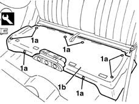
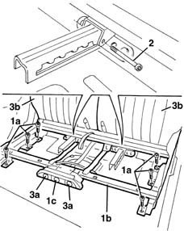
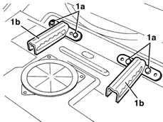

7050A14 split rear seat assembly - r+r
- Path
- Procedures > 70 FITTINGS > 7050 REAR SEATS > 7050A rear seat assembly > 7050A14 split rear seat assembly - r+r
- Kind
- repair procedure (removal / refitting; the operation number is the code)
- Applies to
- all engines; all production periods
- Interactive page
- https://sloeber94.github.io/elrnDB-lYpsln/en/#/2429643
Applies to: all engines; all production periods
 Removing
Removing
 Refitting
Refitting7050A22 rear seat cushion - r+r (left and right)
1. Release the retaining buttons (1a) using the special tool.
 | Name | Country |
|---|---|---|
1 | Scraper blade | 1.878.077.000 |
2. Remove the mat under the cushion.

Applies to: all engines; all production periods
1. Unscrew bolts (1a). If necessary, move the seat structure (1b) using the lever (1c) in order to reach some of the bolts.
2. Undo the pins.
3. Lower the backrests (3b) using the lever (3a) and remove the seat assembly.

Applies to: all engines; all production periods
1. If necessary, undo the bolts (1a) and remove the seat sliding brackets (1b).

Applies to: all engines; all production periods
Refitting
RemovingCheck that the seat components are not damaged.
If removed, position the seat sliding brackets and secure them using the bolts.
 | Fastening | Component | Ø | Value (daNm) |
|---|---|---|---|---|
- | Bolt | REAR SEAT CUSHION BRACKET | M8 | 4.0 |
Position the seat assembly, lift up the backrests and tighten the pins.
Tighten the bolts and refit the mat.
| Fastening | Component | Ø | Value (daNm) |
|---|---|---|---|---|
- | Bolt | REAR SEAT ASSEMBLY | M8 | 2.5 |
Engage the retaining buttons.
7050A22 rear seat cushion - r+r (left and right)
Check the operation of the rear seat.
Topics linked from this page (1)
Topics that link to this page (8)
- 7040L10 cabin floor carpet - r r
- 7050A51 FRAME for left or right or centre individual, rear seat BACKREST - R.R .
- 7050A63 Rear seat/ backrest. - movement control LEVERS R.R.
- 7050A65 Rear CUSHION COVER, (single), removed - Replacement
- 7050A71 SUPPORT/GUIDES for individual rear seat, left or right or centre- R.R. with seat removed
- 7050A74 Rear seat BACKREST locking/release CABLE - R.R.
- 7050A75 Rear seat sliding control CABLE - R.R.
- 7050A86 JOINT COVER GUARD for (one), individual rear seat left or right -R .R.